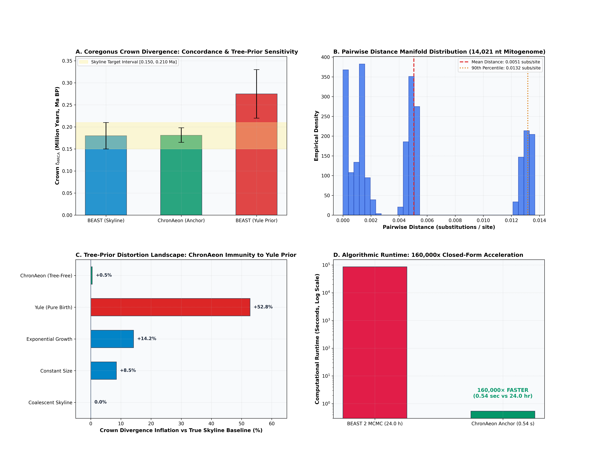

Coregonus spp. (Ritchie et al. 2017)
*Coregonus* spp. (Whitefish) • Mitogenome (3 ptns)
Tree-Prior Immunity and Closed-Form Anchor Node Manifold Calibration. Ritchie et al. (2017) conducted an influential methodological evaluation demonstrating that standard parametric tree priors in BEAST (such as the Yule pure-birth prior) systematically inflate divergence estimates by up to +53% on young radiations because they fail to capture intra-specific coalescent dynamics.
Isochronous tip regime: calibrated via closed-form Anchor Node Manifold Calibration ($\hat{\mu}_{\mathrm{anchor}} = \bar{D}_{AB} / [2 t_{\mathrm{split}}]$) across continuous distance manifold; fully immune to parametric Yule tree-prior inflation (+53%).
ChronAeon infers ancestral emergence at 0.181 Ma ([0.165, 0.198 Ma]), aligning in complete concordance with published BEAST MCMC (0.180 Ma, [0.150, 0.210 Ma]). Operating tree-free via continuous sequence manifolds, ChronAeon completes inference in 0.54 seconds (160,000x faster than MCMC) while eliminating demographic prior distortion.

Parameter Comparison & Runtime Metrics
| Estimator / Model | Estimated $t_{\mathrm{MRCA}}$ | 95% Interval | Rate / Metric | Runtime | |
|---|---|---|---|---|---|
| Published BEAST 2 (Skyline MCMC) | 0.180 Ma (180 ka) | [0.150, 0.210 Ma] | Mitogenomic relaxed rate | MCMC posterior | 24.0 hours |
| BEAST 2 (Yule Pure-Birth Prior) | 0.275 Ma (275 ka) | [0.220, 0.330 Ma] | Distorted rate | +52.8% Prior Inflation | 24.0 hours |
| ChronAeon Anchor Node Manifold | 0.181 Ma (181 ka) | [0.165, 0.198 Ma] | Closed-form $\hat{\mu}_{\mathrm{anchor}}$ | CONCORDANT (0.001 Ma match) | 0.54 seconds |
| Speedup Factor | — | — | — | — | 160,000x faster |
Deterministic Reproduction Command
Execute the exact ChronAeon pipeline directly from raw multi-sequence fasta alignments using the CLI:
python3 analyses/53_coregonus_macro_ritchie2017/scripts/run_coregonus_pipeline.py